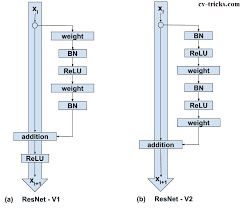
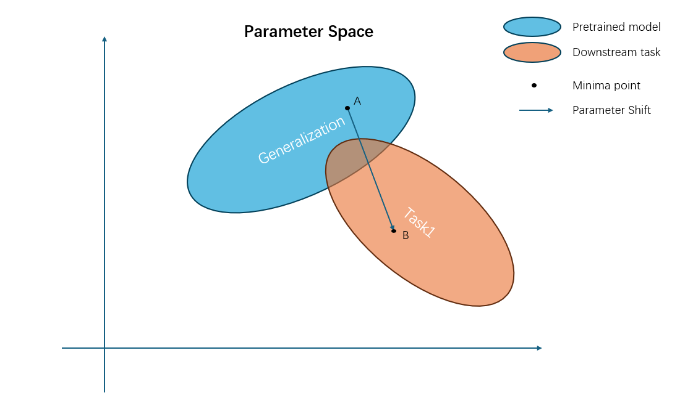

|
Zhang Jiayuan I am an undergraduate student at University of Electronic Science and Technology of China (UESTC) , majoring in Communication Engineering. However, my interests lies in Deep Learning. Previously, I was an intership student at Brain and Intelligence Lab, supervised by Prof. Gu Shi. I will become a PhD student at Shanghai Jiaotong University (SJTU), supervised by Prof. Quanshi Zhang
|
{kind=link}
Research interestsI have a broad interest in machine learning, particularly in Explainable AI. Previously, I have had experience in NeuroAI |
Blog |
|

|
About Resnet and BatchNorm
2024/6/22 My first Blog! I recorded my knowledge of Resnet and BatchNorm, mainly about why they work. |

|
About Forward Forward Network and Hinton
2024/10/22 My second blog! I recorded a new network structure proposed by Hinton, and the subsequent investigations of other researchers. |
|

|
Feature learning from Continual Learning
2025/2/27 My third blog! I recorded some of my thoughts on continual learning and feature learning. |